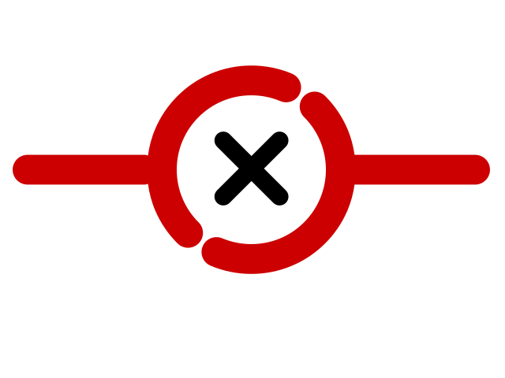

<div class="container-fluid" id="TabContent">
 
      <table class="table table-hover">
          <thead class="thead-dark">
            <tr>
              <th scope="col" class="isConnected"> Connectivity</th>
              <th scope="col" style="margin-left:-10px">Beacon ID</th>
              <th scope="col">Type</th>
              <th scope="col">Status</th>
             
              <th scope="col">Assi. Object</th>
                   </tr>
          </thead>
          <tbody>
            <tr *ngFor ="let device of deviceStatusList">
              <td class="isConnected">
      
                <!-- If condition to check the connectivity status -->
                <div *ngIf="device.Status == 'Offline'" class="ConnectedIcon">
                  
                </div>
      
                <div *ngIf="device.Status == 'Online'" class="ConnectedIcon">
                    
                  </div>
              </td>
              <td>{{device.MacId}}</td>
              <td>{{device.Type}}</td>
              <td>{{device.Status}}</td>
              <td>Pallet</td> <!-- NOT Getting From API-->
            </tr>
            </tbody>
        </table>
</div>